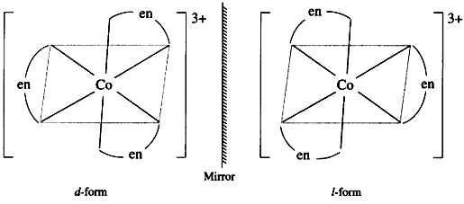

When two or more simple salts are mixed in a fixed ratio, dissolved in water, and then recrystallized, the compound obtained is called an addition compound.
These are of the following two types.
- Double salt.
- Complex salt or coordination compound.
Such addition salts dissociate into all their constituent components when dissolved in water. All the constituent ions of these compounds can be tested for in their aqueous solution.
K2SO4.Cr2(SO4)3.24H2O→ 2K2+ + 2Cr3+ + 4SO42- + 24H2O
- Such addition compounds that do not give tests for all their components in aqueous solution are called complex compounds.
Example -
[Cu(NH₃)₄]SO₄ →[Cu(NH₃)₄]2+ + SO42
Double salt | Complex salt |
These are formed from a mixture of two simple salts. | These are formed from a central metal ion and ligands. |
They are completely ionized in solution, giving their respective ions. | They exist as complex ions in solution and are not completely ionized. |
Their properties are similar to those of their constituent ions. | Their properties differ from the original ions. |
- Homoleptic complex
- Heteroleptic complex
- Complexes in which the metal atom is bonded to only one kind of donor group are called homoleptic complexes.
Example-
[Cu(NH₃)₄]SO₄
- Complexes in which the metal atom is bonded to more than one kind of donor group are called heteroleptic complexes.
Example -
[ Co(NH3)5Cl ]Cl₂
- Coordination compounds are used in qualitative analysis to identify ions, in group tests of basic radicals, and in quantitative estimation.
- They are used in the extraction and refining of metals.
- In coordination compounds, the metal atom to which various ligands are attached is called the central metal atom.
For example, in the coordination compound [Cu(NH₃)₄]SO₄, Cu is called the central metal atom.
- Any atom, molecule, or ion that can donate an electron pair to the central metal ion is called a ligand. These ligands surround the central ion.
For example, in the coordination compound [Cu(NH₃)₄]SO₄, NH₃ is the ligand.
The number of ligands directly attached to the central metal ion in a coordination compound is called the coordination number.
For example, in the coordination compound [Cu(NH₃)₄]SO₄, the coordination number of the central metal Cu is 4.
What is called the coordination sphere?
- The central metal atom and the ligands directly attached to it are written within large square brackets. This is called the coordination sphere.
For example, in the coordination compound [Cu(NH₃)₄]SO₄, [Cu(NH₃)₄] is the coordination sphere.
Ions located outside the coordination sphere, which are loosely attached to the central metal and separate on ionization in solution, are called the ionization sphere.
For example, in the coordination compound [Cu(NH₃)₄]SO₄, SO₄ is the ionization sphere.
Types of ligand
- Monodentate - a ligand having only one donor atom.
Example: Ammonia
:NH₃
- Bidentate - a ligand having two donor atoms.
Example: Ethylenediamine (en)
:NH2-CH2-CH2- H2N:
- Polydentate - a ligand having many donor atoms.
Example: EDTA
Full name: Ethylenediaminetetraacetate
Nature: Hexadentate ligand
Structural formula:

Ligands that can attach to the central metal ion through two different donor atoms are called ambidentate ligands.
Example - NO₂⁻ (nitrite)
It can attach to the central metal ion through N or O, hence NO₂⁻ is an ambidentate ligand.
- When a polydentate ligand combines with a metal or metal ion to form a molecule with a cyclic structure, this compound is called a chelate.
Example- Nickel dimethylglyoxime
Uses-
- Metal estimation.
- Biological reactions.
- Treatment of lead poisoning (using EDTA).
- Water purification.
Ligands that hold a metal ion with two or more teeth to form a chelate are called chelating agents.
Example:
EDTA, oxalic acid, ethylenediamine (en), etc.
Importance of chelates:
- Determination of water hardness: EDTA forms a chelate and indicates the amount of Ca²⁺ and Mg²⁺ ions.
- Use in analysis: Chelating agents are used in the estimation of metal ions (Ca, Mg).
- In biochemistry: In hemoglobin, Fe transports gases in chelate form; many enzymes function in metal-chelate form.
- In medicine: Chelate compounds such as cisplatin are useful in cancer treatment.
- The actual charge present on the central metal ion in a coordination compound is called the oxidation number. It is determined by taking into account the charges of the ligands.
Example, in [Fe(CN)6]4- —
Fe + [ 6 × (−1)] = − 4
Fe −6 = − 4
Fe = + 6 − 4
Fe = + 2
Oxidation number of Fe = +2.
- The sum of the number of electrons present in the central metal atom of a coordination compound and the number of electrons gained from bond formation is called the effective atomic number (E.A.N.).
EAN = Atomic number of the central metal − electrons lost in ionization + electrons gained from ligands
Example:
[Fe(CN)₆]⁴⁻ → 36,
[Fe(CN)₆]³⁻ → 35,
[Co(NH₃)₆]³⁺ → 36
1. K₂[Cu(CN)₄] → Potassium tetracyanocuprate (II)
2. K₃[Fe(CN)₆] → Potassium hexacyanoferrate (III)
3. K₂[Ni(CN)₄] → Potassium tetracyanonickelate (II)
4. K₄[Fe(CN)₆] → Potassium hexacyanoferrate (II)
5. K₃[Ag(CN)₄] → Potassium tetracyanoargentate (I)
6. K[Ag(CN)₂] → Potassium dicyanoargentate (I)
7. K[BF₄] → Potassium tetrafluoroborate
8. K₄[Ni(CN)₄] → Potassium tetracyanonickelate (0)
9. Na₄[Ni(EDTA)] → Sodium ethylenediaminetetraacetatonickelate (II)
10. K₂[PtCl₆] → Potassium hexachloroplatinate (IV)
11. K[Pt(NH₃)Cl₅] → Potassium amminepentachloroplatinate (IV)
12. Na[Co(CO)₄] → Sodium tetracarbonylcobaltate (−I)
13. Na[Au(CN)₂] → Sodium dicyanoaurate (I)
14. Na₄[Ni(CN)₄] → Sodium tetracyanonickelate (0)
15. K₂[Zn(OH)₄] → Potassium tetrahydroxozincate (II)
16. K₂[HgI₄] → Potassium tetraiodomercurate (II)
17. [Cu(NH₃)₄]SO₄ → Tetraamminecopper (II) sulphate
18. [Ag(NH₃)₂]Cl₂ → Diamminesilver (I) chloride
19. [Co(NH₃)₆]Cl₃ → Hexaamminecobalt (III) chloride
20. [Cr(H₂O)₆]Cl₃ → Hexaaquachromium (III) chloride
21. [Co(NH₃)₅Cl]Cl₂ → Pentaamminechlorocobalt (III) chloride
Alfred Werner proposed this theory to explain the structure of coordination compounds. Its main postulates are as follows.
- A metal ion possesses two types of valency simultaneously.
- Primary valency (ionizable) represents the oxidation state of the metal. It is satisfied by anions, is shown by a dotted line (…..), and gets ionized in solution.
- Secondary valency (non-ionizable) represents the coordination number of the metal. It is satisfied by neutral molecules or anions, is shown by a solid line (—), and does not get ionized in solution.
- Every metal ion satisfies both its primary and secondary valencies.
- The secondary valency of every metal ion is fixed, and this is its coordination number.
- Secondary valencies are spatially arranged, which gives rise to a definite geometric structure.
C.N. 4 → Tetrahedral.
C.N. 6 → Octahedral.
Example:
1. In [Co(NH₃)₆]Cl₃, for Co³⁺
Primary valency = 3
Secondary valency = 6
Structure: Octahedral.
In solution:
[Co(NH₃)₆]Cl₃ → [Co(NH₃)₆]³⁺ + 3Cl⁻
2. In [Co(NH₃)₅Cl]Cl₂, for Co³⁺
[Co(NH₃)₅Cl]Cl₂ → [Co(NH₃)₅Cl]²⁺ + 2Cl⁻
3. In [Co(NH₃)₄Cl₂]Cl, for Co³⁺
Secondary valency = 6
[Co(NH₃)₄Cl₂]Cl → [Co(NH₃)₄Cl₂]⁺ + Cl⁻
According to VBT, proposed by Linus Pauling, the structure and magnetic properties of coordination compounds are explained.
Its main postulates are as follows.
- The central metal ion makes available empty orbitals of roughly equal energy.
- These orbitals undergo hybridization.
- Each ligand fills these orbitals with its lone electron pair, forming a covalent bond.
- The bonds formed are directional and determine the geometry of the compound.
Hybridization and structure
sp³ → Tetrahedral
dsp² → Square planar
d²sp³ or sp³d² → Octahedral
Compounds having the same molecular formula but showing different arrangements are called isomers, and this property is called isomerism.
Isomerism is of two types.
(A) Structural isomerism - Isomerism arising due to differences in structure or the position of bonding is called structural isomerism.
It is of the following types.
- Ionization isomerism - When the group present in the ionization sphere is exchanged with the group present in the coordination sphere, it is called ionization isomerism.
Example:
[Co(NH₃)₅Br]SO₄
[Co(NH₃)₅SO₄]Br
- Hydrate isomerism - When water molecules are present inside and outside the coordination sphere of a complex in different ways, it is called hydrate isomerism.
Example:
Three forms of CrCl₃·6H₂O
[Cr(H₂O)₆]Cl₃ (violet)
[Cr(H₂O)₅Cl]Cl₂·H₂O (green)
[Cr(H₂O)₄Cl₂]Cl·2H₂O (dark green)
- Linkage isomerism - When the same ligand can attach to the central ion in two different ways, this isomerism is exhibited.
[Co(NH₃)₅(SCN)]Cl
[Co(NH₃)₅(NCS)]Cl
- Coordination isomerism - When ligands are exchanged between the cationic and anionic parts, it is called coordination isomerism.
[Co(NH₃)₆][Cr(CN)₆]
[Cr(NH₃)₆][Co(CN)₆]
(B) Stereoisomerism - Isomerism arising from a difference in the spatial arrangement of ligands around the central ion in the molecule is called stereoisomerism.
It is of two types.
- Geometrical isomerism - Isomerism arising due to a difference in the position of ligands in the spatial arrangement around the central ion is called geometrical isomerism.
If ligands of the same type occupy adjacent positions, it is called the cis form. And if they are in opposite positions, it is called the trans form.
Example: [Pt(NH₃)₂Cl₂] → cis and trans forms.

- Optical isomerism - When two isomers of a compound are mirror images of each other and cannot be superimposed on one another, it is called optical isomerism.
The isomer that rotates polarized light to the right is called the d-isomer, and the one that rotates it to the left is called the l-isomer.
Example -

Coordination compounds are important in industry, medicine, and analysis.
Uses:
- In metal extraction (Au, Ag using NaCN).
- In photography (dissolving AgBr in hypo).
- In determining water hardness (using EDTA).
- In medicines (EDTA - treatment of lead poisoning, cisplatin - cancer treatment).
- In electroplating using K[Ag(CN)₂].
- In dissolving insoluble substances.
Compounds in which the metal atom is directly bonded to a carbon atom are called organometallic compounds.
C₂H₅Na
CH₃MgI
(C₂H₅)₂Zn
Fe(η⁵–C₅H₅)₂ (ferrocene)
Uses:
- Fuel additive: Pb(C₂H₅)₄, an anti-knock compound in petrol.
- Organic synthesis: using Grignard reagents (RMgX).
- Catalyst: Ziegler-Natta catalyst (Ti/Al compounds) for polymer synthesis.
- Medicines: used in some medicines.
Ferrocene is an organometallic compound.
Formula: Fe(η⁵–C₅H₅)₂

Its structure is a sandwich structure in which
- Fe is located between two cyclic C₅H₅⁻ rings.
- Each ring provides Fe with 5 π-electrons.
- A total of 10 electrons coordinate with Fe.
- This structure is highly stable and has aromatic character.
Zeise's salt is a Pt-ethylene complex.
Formula: K[PtCl₃(η²–C₂H₄)]·H₂O

Structure:
- Pt is in the +2 oxidation state.
- The C₂H₄ ligand attaches to Pt through its π-bond (C=C).
- Ethylene coordinates with Pt in a side-on (η²) manner.
- Pt → C=C π-back bonding increases stability.
- The geometry of Pt is square planar.